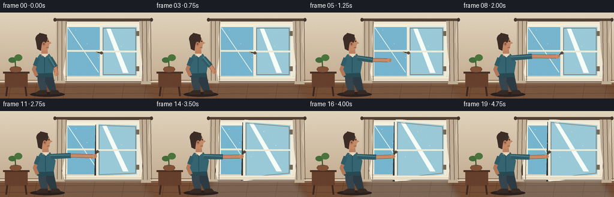
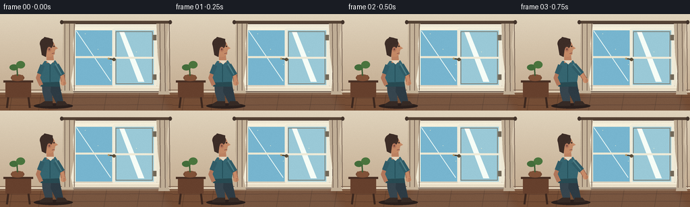
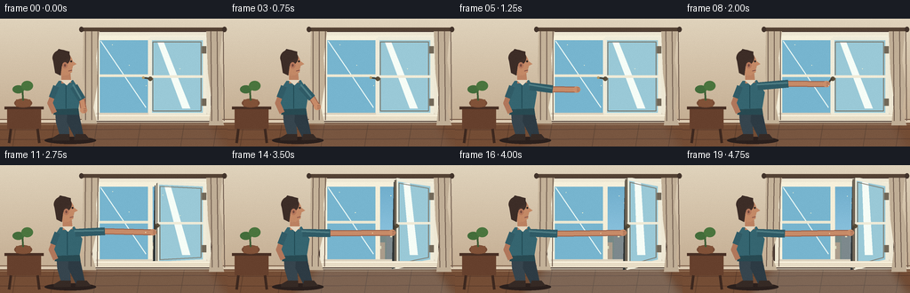

CODING AGENTS AS PIXEL WORLD MODELS
traex/GPT-5.6-Sol · motion_rationality_0042
点击播放 · 原生 RGB 像素
逐轮保存的候选
回放视频、检查图与代码变化。
每份候选均可单独播放。实际图片检查记录在下方工具轨迹中。
候选 01播放与检查图
点击播放 · 原生 RGB 像素

展开代码变化
--- 上一保存版本
+++ 本次保存版本
@@ -0,0 +1,200 @@
+from pathlib import Path
+import json, math
+import numpy as np
+from PIL import Image, ImageDraw, ImageFilter
+import artifact_io
+
+CASE = Path(__file__).resolve().parent
+spec = json.loads((CASE/'task_spec.json').read_text())
+W,H,N = spec['width'],spec['height'],spec['frames']
+S=4
+
+def ease(x):
+ x=max(0.0,min(1.0,x)); return x*x*(3-2*x)
+def clamp(v): return max(0,min(255,int(v)))
+def P(x,y): return (round(x*S),round(y*S))
+def BOX(b): return tuple(round(v*S) for v in b)
+def POLY(q): return [P(x,y) for x,y in q]
+
+def make_frame(i):
+ t=i/(N-1)
+ # Actions: reach, turn latch, swing casement inward.
+ reach=ease((i-2)/5)
+ opening=ease((i-8)/8)
+ settle=ease((i-16)/3)
+ # high resolution render
+ yy=np.linspace(0,1,H*S)[:,None,None]
+ top=np.array([224,211,188])[None,None,:]; bot=np.array([190,165,137])[None,None,:]
+ arr=np.tile((top*(1-yy)+bot*yy),(1,W*S,1)).astype(np.uint8)
+ im=Image.fromarray(arr,'RGB'); d=ImageDraw.Draw(im,'RGBA')
+ # quiet plaster texture and wall highlights
+ for k in range(24):
+ x=(k*47+13)%W; y=(k*29+17)%112
+ d.ellipse(BOX((x,y,x+0.7,y+0.7)),fill=(255,248,226,24))
+ d.rectangle(BOX((0,113,W,118)), fill=(113,82,62,255))
+ d.rectangle(BOX((0,114,W,117)), fill=(220,203,178,255))
+ # floorboards
+ d.rectangle(BOX((0,118,W,H)),fill=(116,77,53,255))
+ for y in [125,136]: d.line([P(0,y),P(W,y-1)],fill=(74,48,38,150),width=S)
+ for x in [18,61,109,158,207,244]:
+ d.line([P(x,118),P(x-4,H)],fill=(76,49,37,120),width=S)
+ d.line([P(0,119),P(W,119)],fill=(245,224,189,70),width=S)
+ # cool window light on floor, strengthening as opened
+ light=Image.new('RGBA',im.size,(0,0,0,0)); ld=ImageDraw.Draw(light,'RGBA')
+ ld.polygon(POLY([(105,108),(233,108),(256,144),(73,144)]),fill=(172,216,230,int(16+opening*30)))
+ light=light.filter(ImageFilter.GaussianBlur(5*S)); im=Image.alpha_composite(im.convert('RGBA'),light); d=ImageDraw.Draw(im,'RGBA')
+ # window drop shadow and casing
+ d.rounded_rectangle(BOX((101,13,239,116)),radius=3*S,fill=(65,48,42,65))
+ d.rectangle(BOX((104,15,237,114)),fill=(238,231,211,255))
+ d.rectangle(BOX((109,20,232,109)),fill=(83,77,73,255))
+ # outdoor view, clipped naturally to aperture
+ out=Image.new('RGBA',im.size,(0,0,0,0)); od=ImageDraw.Draw(out,'RGBA')
+ # sky gradient bands
+ for y in range(22,108):
+ q=(y-22)/86; col=(112+int(40*q),174+int(30*q),204+int(26*q),255)
+ od.line([P(111,y),P(230,y)],fill=col,width=S+1)
+ # clouds
+ od.ellipse(BOX((119,31,146,40)),fill=(244,245,231,180)); od.ellipse(BOX((134,28,158,40)),fill=(250,247,231,180))
+ od.ellipse(BOX((190,39,216,46)),fill=(244,242,225,145))
+ # distant roofs/buildings
+ od.rectangle(BOX((111,76,230,108)),fill=(119,137,135,255))
+ for bx,bw,bh,c in [(113,18,24,(156,153,139,255)),(133,24,31,(133,145,145,255)),(160,17,21,(171,157,139,255)),(179,27,34,(125,137,141,255)),(208,22,27,(157,151,137,255))]:
+ od.rectangle(BOX((bx,108-bh,bx+bw,108)),fill=c)
+ for wx in range(bx+4,bx+bw-2,7):
+ od.rectangle(BOX((wx,112-bh,wx+2,115-bh)),fill=(218,220,191,170))
+ # nearby tree, slight wind after opening
+ sway=math.sin(i*.55)*opening*1.3
+ od.line([P(220,108),P(218+sway,72),P(225+sway,49)],fill=(73,77,49,255),width=3*S)
+ for x,y,r in [(216,68,10),(225,63,11),(213,55,8),(228,51,9),(221,78,9)]:
+ od.ellipse(BOX((x-r+sway,y-r,x+r+sway,y+r)),fill=(69,111,62,235))
+ od.ellipse(BOX((x-r*.5+sway-2,y-r*.8,x+r*.4+sway,y+r*.2)),fill=(106,144,77,170))
+ # aperture mask
+ mask=Image.new('L',im.size,0); ImageDraw.Draw(mask).rectangle(BOX((111,22,230,108)),fill=255)
+ out.putalpha(mask); im=Image.alpha_composite(im,out); d=ImageDraw.Draw(im,'RGBA')
+ # fixed left pane with reflections
+ d.rectangle(BOX((111,22,169,108)),fill=(119,181,207,22))
+ d.line([P(113,25),P(164,100)],fill=(237,249,246,38),width=S)
+ d.line([P(110,64),P(169,64)],fill=(236,232,211,255),width=3*S)
+ d.rectangle(BOX((108,19,112,111)),fill=(247,241,220,255))
+ d.rectangle(BOX((166.5,19,171.5,111)),fill=(244,238,216,255))
+ d.rectangle(BOX((108,19,233,24)),fill=(246,240,219,255))
+ d.rectangle(BOX((108,106,233,111)),fill=(221,211,191,255))
+ # opening casement, right-hinged. Free edge comes toward viewer/left and grows.
+ a=opening
+ fx=169*(1-a)+148*a
+ fyt=22*(1-a)+15*a
+ fyb=108*(1-a)+116*a
+ hx=230; hyt=22; hyb=108
+ panel=[(fx,fyt),(hx,hyt),(hx,hyb),(fx,fyb)]
+ # soft panel shadow cast into room
+ if a>0.02:
+ d.polygon(POLY([(fx-3,fyt+3),(fx+3,fyt+2),(fx+3,fyb),(fx-5,fyb+2)]),fill=(47,53,54,int(45*a)))
+ # glass fill + reflected stripe
+ d.polygon(POLY(panel),fill=(154,201,215,int(42+20*(1-a))))
+ stripe=[(fx+8,fyt+4),(fx+15,fyt+4),(hx-16,hyt+79),(hx-25,hyt+79)]
+ d.polygon(POLY(stripe),fill=(246,253,247,35))
+ # casement frame outline
+ d.line(POLY(panel+[panel[0]]),fill=(239,235,217,255),width=4*S,joint='curve')
+ # slim inner bevel
+ inset=[(fx+3,fyt+4),(hx-4,hyt+4),(hx-4,hyb-4),(fx+3,fyb-4)]
+ d.line(POLY(inset+[inset[0]]),fill=(124,118,105,150),width=S)
+ # horizontal bar follows perspective
+ def edge_at(fr): return (fx, fyt+(fyb-fyt)*fr)
+ fy=fyt+(fyb-fyt)*.5; hy=hyt+(hyb-hyt)*.5
+ d.line([P(fx,fy),P(hx,hy)],fill=(239,235,216,255),width=3*S)
+ # hinges
+ for yyh in (35,94): d.rectangle(BOX((227,yyh-4,232,yyh+4)),fill=(114,104,88,255))
+ # handle on free stile, rotates downward around frame 8
+ turn=ease((i-6)/3)
+ handle_y=fyt+(fyb-fyt)*.53
+ d.ellipse(BOX((fx-2.4,handle_y-2.4,fx+2.4,handle_y+2.4)),fill=(90,78,58,255))
+ ang=(-8*(1-turn)+62*turn)*math.pi/180
+ he=(fx-8*math.cos(ang),handle_y+8*math.sin(ang))
+ d.line([P(fx-1,handle_y),P(*he)],fill=(72,64,52,255),width=2*S)
+ d.ellipse(BOX((he[0]-1.4,he[1]-1.4,he[0]+1.4,he[1]+1.4)),fill=(177,151,100,255))
+ # sill in foreground
+ d.polygon(POLY([(102,108),(239,108),(243,115),(99,115)]),fill=(232,221,198,255))
+ d.line([P(101,109),P(239,109)],fill=(255,249,229,230),width=S)
+ # Curtains; subtle breeze only after window opens
+ phase=math.sin(i*.7)
+ bill=opening*(4+2*phase)
+ leftcur=[(94,12),(112,12),(108,44),(110-bill*.25,71),(105-bill,100),(109-bill*.5,118),(91,118),(96,91),(93,61)]
+ rightcur=[(232,12),(250,12),(247,47),(251+bill*.3,77),(247+bill*.7,104),(252,120),(235,120),(238,92),(234,61)]
+ d.polygon(POLY(leftcur),fill=(196,178,153,244)); d.polygon(POLY(rightcur),fill=(192,174,150,244))
+ for off,alpha in [(0,60),(7,38),(14,55)]:
+ d.line([P(96+off,13),P(96+off-bill*.35,114)],fill=(112,92,78,alpha),width=S)
+ d.line([P(237+off,13),P(238+off+bill*.25,115)],fill=(112,92,78,alpha),width=S)
+ d.rectangle(BOX((91,10,252,14)),fill=(84,66,52,255)); d.ellipse(BOX((89,9,94,15)),fill=(67,52,43,255)); d.ellipse(BOX((250,9,255,15)),fill=(67,52,43,255))
+ # small cabinet at far left
+ d.rectangle(BOX((5,99,49,102)),fill=(72,47,36,255)); d.rectangle(BOX((8,102,46,124)),fill=(102,64,45,255))
+ d.line([P(12,124),P(10,140)],fill=(61,40,31,255),width=3*S); d.line([P(42,124),P(44,140)],fill=(61,40,31,255),width=3*S)
+ d.ellipse(BOX((16,90,36,100)),fill=(117,74,52,255)); d.rectangle(BOX((18,91,34,99)),fill=(129,82,56,255))
+ d.line([P(26,92),P(25,76)],fill=(62,92,53,255),width=2*S)
+ d.ellipse(BOX((14,75,27,84)),fill=(67,109,59,255)); d.ellipse(BOX((24,70,37,81)),fill=(74,117,62,255))
+ # Person cast shadow
+ d.ellipse(BOX((50,133,108,141)),fill=(43,32,29,80))
+ # Person legs, stable planted stance
+ lean=reach*1.6-opening*.4
+ hip=(75+lean,107)
+ d.polygon(POLY([(62+lean,104),(76+lean,103),(78+lean,132),(68+lean,134),(63+lean,117)]),fill=(54,69,78,255))
+ d.polygon(POLY([(76+lean,103),(88+lean,104),(94+lean,132),(84+lean,134),(75+lean,116)]),fill=(45,59,68,255))
+ d.polygon(POLY([(66+lean,130),(78+lean,130),(78+lean,137),(59+lean,137),(59+lean,134)]),fill=(54,42,37,255))
+ d.polygon(POLY([(85+lean,130),(96+lean,130),(101+lean,136),(83+lean,137)]),fill=(54,42,37,255))
+ # torso shirt
+ shoulder=(77+lean,72)
+ torso=[(66+lean,70),(82+lean,69),(91+lean,83),(87+lean,107),(61+lean,107),(58+lean,82)]
+ d.polygon(POLY(torso),fill=(53,101,112,255))
+ d.polygon(POLY([(61+lean,102),(88+lean,101),(89+lean,108),(60+lean,108)]),fill=(40,74,82,255))
+ # back/idle arm partially visible
+ d.line([P(63+lean,76),P(56+lean,95),P(61+lean,106)],fill=(177,119,91,255),width=6*S,joint='curve')
+ d.line([P(63+lean,76),P(58+lean,89)],fill=(49,92,103,255),width=7*S)
+ # neck
+ d.polygon(POLY([(69+lean,61),(79+lean,61),(80+lean,72),(69+lean,73)]),fill=(188,129,97,255))
+ # head profile
+ hxhead=72+lean; hyhead=51
+ d.ellipse(BOX((61+lean,38,82+lean,64)),fill=(193,135,101,255))
+ # nose and chin profile, face right
+ d.polygon(POLY([(78+lean,45),(86+lean,51),(80+lean,54),(81+lean,60),(75+lean,64),(68+lean,60)]),fill=(196,137,102,255))
+ # hair mass and ear
+ d.ellipse(BOX((59+lean,35,79+lean,53)),fill=(66,48,41,255))
+ d.polygon(POLY([(59+lean,43),(62+lean,61),(68+lean,64),(70+lean,48),(78+lean,44),(78+lean,37),(66+lean,34)]),fill=(61,45,39,255))
+ d.ellipse(BOX((70+lean,49,76+lean,56)),fill=(181,119,91,255)); d.ellipse(BOX((72+lean,51,74+lean,54)),fill=(116,73,62,180))
+ d.ellipse(BOX((79+lean,47,81+lean,49)),fill=(45,39,35,255))
+ d.line([P(81+lean,58),P(77+lean,59)],fill=(124,72,66,210),width=S)
+ # active arm articulated to handle; smooth reach then follows moving sash
+ sx,sy=(83+lean,76)
+ idle_el=(92+lean,91); target_el=(119-4*opening,73+4*opening)
+ ex=idle_el[0]*(1-reach)+target_el[0]*reach
+ ey=idle_el[1]*(1-reach)+target_el[1]*reach
+ idle_hand=(94+lean,103)
+ grip=(he[0]-1.2,he[1]+0.5)
+ gx=idle_hand[0]*(1-reach)+grip[0]*reach
+ gy=idle_hand[1]*(1-reach)+grip[1]*reach
+ # skin limb beneath sleeve, with highlights
+ d.line([P(sx,sy),P(ex,ey),P(gx,gy)],fill=(158,99,76,255),width=7*S,joint='curve')
+ d.line([P(ex,ey),P(gx,gy)],fill=(199,139,104,255),width=5*S,joint='curve')
+ d.line([P(sx,sy),P(ex,ey)],fill=(47,91,102,255),width=9*S,joint='curve')
+ d.line([P(sx-1,sy-2),P(ex-1,ey-1)],fill=(78,125,132,160),width=2*S)
+ # hand grasp
+ d.ellipse(BOX((gx-4,gy-3.5,gx+4,gy+3.5)),fill=(202,142,106,255))
+ for dy in (-1.8,0,1.8): d.line([P(gx,gy+dy),P(gx+3,gy+dy)],fill=(137,85,68,150),width=max(1,S//2))
+ # shirt collar/details
+ d.polygon(POLY([(68+lean,69),(75+lean,75),(81+lean,69)]),fill=(228,214,191,180))
+ d.line([P(74+lean,75),P(74+lean,101)],fill=(33,75,85,160),width=S)
+ # window-side glints/dust after open
+ for k in range(5):
+ x=126+(k*19)%93 + math.sin(i*.25+k)*opening*2
+ y=29+(k*23)%65 + i*.08*opening
+ d.ellipse(BOX((x,y,x+.8,y+.8)),fill=(255,249,211,int(40+50*opening)))
+ # downsample antialiased
+ rgb=im.convert('RGB').resize((W,H),Image.Resampling.LANCZOS)
+ ar=np.asarray(rgb).astype(np.int16)
+ # static, very gentle sensor texture: same pattern each frame for coherence
+ rng=np.random.default_rng(4242)
+ noise=rng.normal(0,0.65,(H,W,1))
+ ar=np.clip(ar+noise,0,255).astype(np.uint8)
+ return ar
+
+frames=np.stack([make_frame(i) for i in range(N)],axis=0)
+artifact_io.save(frames, CASE)
+print('saved',frames.shape,frames.dtype)
候选 02播放与检查图
点击播放 · 原生 RGB 像素


展开代码变化
--- 上一保存版本
+++ 本次保存版本
@@ -81,7 +81,10 @@
d.rectangle(BOX((108,106,233,111)),fill=(221,211,191,255))
# opening casement, right-hinged. Free edge comes toward viewer/left and grows.
a=opening
- fx=169*(1-a)+148*a
+ # A right-hinged leaf foreshortens as it rotates toward the room: its
+ # free edge travels toward the hinge in screen space while the near edge
+ # grows vertically from perspective.
+ fx=169*(1-a)+194*a
fyt=22*(1-a)+15*a
fyb=108*(1-a)+116*a
hx=230; hyt=22; hyb=108
@@ -95,6 +98,10 @@
d.polygon(POLY(stripe),fill=(246,253,247,35))
# casement frame outline
d.line(POLY(panel+[panel[0]]),fill=(239,235,217,255),width=4*S,joint='curve')
+ # Dark inner side of the near stile makes the changing opening angle read.
+ if a > 0.01:
+ d.polygon(POLY([(fx-2.8*a,fyt+1),(fx,fyt),(fx,fyb),(fx-2.8*a,fyb+1)]),
+ fill=(111,101,86,int(210*a)))
# slim inner bevel
inset=[(fx+3,fyt+4),(hx-4,hyt+4),(hx-4,hyb-4),(fx+3,fyb-4)]
d.line(POLY(inset+[inset[0]]),fill=(124,118,105,150),width=S)
候选 03播放与检查图
点击播放 · 原生 RGB 像素

展开代码变化
--- 上一保存版本
+++ 本次保存版本
@@ -19,14 +19,14 @@
def make_frame(i):
t=i/(N-1)
# Actions: reach, turn latch, swing casement inward.
- reach=ease((i-2)/5)
+ reach=ease(i/7)
opening=ease((i-8)/8)
settle=ease((i-16)/3)
# high resolution render
yy=np.linspace(0,1,H*S)[:,None,None]
top=np.array([224,211,188])[None,None,:]; bot=np.array([190,165,137])[None,None,:]
arr=np.tile((top*(1-yy)+bot*yy),(1,W*S,1)).astype(np.uint8)
- im=Image.fromarray(arr,'RGB'); d=ImageDraw.Draw(im,'RGBA')
+ im=Image.fromarray(arr); d=ImageDraw.Draw(im,'RGBA')
# quiet plaster texture and wall highlights
for k in range(24):
x=(k*47+13)%W; y=(k*29+17)%112
候选 04播放与检查图
可观测工具轨迹
实际执行的命令与返回图片。
命令 1exit 0
/bin/bash -lc "cat prompt.txt && printf '\\n---RULES---\\n' && cat GENERATION_RULES.md && printf '\\n---SPEC---\\n' && cat task_spec.json"
命令 2exit 0
/bin/bash -lc "find . -maxdepth 2 -type f -printf '%p\\n' | sort"
命令 3exit 0
/bin/bash -lc 'cat artifact_io.py'
命令 4exit 0
/bin/bash -lc "cat > generate.py <<'PY'
from pathlib import Path
import json, math
import numpy as np
from PIL import Image, ImageDraw, ImageFilter
import artifact_io
CASE = Path(__file__).resolve().parent
spec = json.loads((CASE/'task_spec.json').read_text())
W,H,N = spec['width'],spec['height'],spec['frames']
S=4
def ease(x):
x=max(0.0,min(1.0,x)); return x*x*(3-2*x)
def clamp(v): return max(0,min(255,int(v)))
def P(x,y): return (round(x*S),round(y*S))
def BOX(b): return tuple(round(v*S) for v in b)
def POLY(q): return [P(x,y) for x,y in q]
def make_frame(i):
t=i/(N-1)
# Actions: reach, turn latch, swing casement inward.
reach=ease((i-2)/5)
opening=ease((i-8)/8)
settle=ease((i-16)/3)
# high resolution render
yy=np.linspace(0,1,H*S)[:,None,None]
top=np.array([224,211,188])[None,None,:]; bot=np.array([190,165,137])[None,None,:]
arr=np.tile((top*(1-yy)+bot*yy),(1,W*S,1)).astype(np.uint8)
im=Image.fromarray(arr,'RGB'); d=ImageDraw.Draw(im,'RGBA')
# quiet plaster texture and wall highlights
for k in range(24):
x=(k*47+13)%W; y=(k*29+17)%112
d.ellipse(BOX((x,y,x+0.7,y+0.7)),fill=(255,248,226,24))
d.rectangle(BOX((0,113,W,118)), fill=(113,82,62,255))
d.rectangle(BOX((0,114,W,117)), fill=(220,203,178,255))
# floorboards
d.rectangle(BOX((0,118,W,H)),fill=(116,77,53,255))
for y in [125,136]: d.line([P(0,y),P(W,y-1)],fill=(74,48,38,150),width=S)
for x in [18,61,109,158,207,244]:
d.line([P(x,118),P(x-4,H)],fill=(76,49,37,120),width=S)
d.line([P(0,119),P(W,119)],fill=(245,224,189,70),width=S)
# cool window light on floor, strengthening as opened
light=Image.new('RGBA',im.size,(0,0,0,0)); ld=ImageDraw.Draw(light,'RGBA')
ld.polygon(POLY([(105,108),(233,108),(256,144),(73,144)]),fill=(172,216,230,int(16+opening*30)))
light=light.filter(ImageFilter.GaussianBlur(5*S)); im=Image.alpha_composite(im.convert('RGBA'),light); d=ImageDraw.Draw(im,'RGBA')
# window drop shadow and casing
d.rounded_rectangle(BOX((101,13,239,116)),radius=3*S,fill=(65,48,42,65))
d.rectangle(BOX((104,15,237,114)),fill=(238,231,211,255))
d.rectangle(BOX((109,20,232,109)),fill=(83,77,73,255))
# outdoor view, clipped naturally to aperture
out=Image.new('RGBA',im.size,(0,0,0,0)); od=ImageDraw.Draw(out,'RGBA')
# sky gradient bands
for y in range(22,108):
q=(y-22)/86; col=(112+int(40*q),174+int(30*q),204+int(26*q),255)
od.line([P(111,y),P(230,y)],fill=col,width=S+1)
# clouds
od.ellipse(BOX((119,31,146,40)),fill=(244,245,231,180)); od.ellipse(BOX((134,28,158,40)),fill=(250,247,231,180))
od.ellipse(BOX((190,39,216,46)),fill=(244,242,225,145))
# distant roofs/buildings
od.rectangle(BOX((111,76,230,108)),fill=(119,137,135,255))
for bx,bw,bh,c in [(113,18,24,(156,153,139,255)),(133,24,31,(133,145,145,255)),(160,17,21,(171,157,139,255)),(179,27,34,(125,137,141,255)),(208,22,27,(157,151,137,255))]:
od.rectangle(BOX((bx,108-bh,bx+bw,108)),fill=c)
for wx in range(bx+4,bx+bw-2,7):
od.rectangle(BOX((wx,112-bh,wx+2,115-bh)),fill=(218,220,191,170))
# nearby tree, slight wind after opening
sway=math.sin(i*.55)*opening*1.3
od.line([P(220,108),P(218+sway,72),P(225+sway,49)],fill=(73,77,49,255),width=3*S)
for x,y,r in [(216,68,10),(225,63,11),(213,55,8),(228,51,9),(221,78,9)]:
od.ellipse(BOX((x-r+sway,y-r,x+r+sway,y+r)),fill=(69,111,62,235))
od.ellipse(BOX((x-r*.5+sway-2,y-r*.8,x+r*.4+sway,y+r*.2)),fill=(106,144,77,170))
# aperture mask
mask=Image.new('L',im.size,0); ImageDraw.Draw(mask).rectangle(BOX((111,22,230,108)),fill=255)
out.putalpha(mask); im=Image.alpha_composite(im,out); d=ImageDraw.Draw(im,'RGBA')
# fixed left pane with reflections
d.rectangle(BOX((111,22,169,108)),fill=(119,181,207,22))
d.line([P(113,25),P(164,100)],fill=(237,249,246,38),width=S)
d.line([P(110,64),P(169,64)],fill=(236,232,211,255),width=3*S)
d.rectangle(BOX((108,19,112,111)),fill=(247,241,220,255))
d.rectangle(BOX((166.5,19,171.5,111)),fill=(244,238,216,255))
d.rectangle(BOX((108,19,233,24)),fill=(246,240,219,255))
d.rectangle(BOX((108,106,233,111)),fill=(221,211,191,255))
# opening casement, right-hinged. Free edge comes toward viewer/left and grows.
a=opening
fx=169*(1-a)+148*a
fyt=22*(1-a)+15*a
fyb=108*(1-a)+116*a
hx=230; hyt=22; hyb=108
panel=[(fx,fyt),(hx,hyt),(hx,hyb),(fx,fyb)]
# soft panel shadow cast into room
if a>0.02:
d.polygon(POLY([(fx-3,fyt+3),(fx+3,fyt+2),(fx+3,fyb),(fx-5,fyb+2)]),fill=(47,53,54,int(45*a)))
# glass fill + reflected stripe
d.polygon(POLY(panel),fill=(154,201,215,int(42+20*(1-a))))
stripe=[(fx+8,fyt+4),(fx+15,fyt+4),(hx-16,hyt+79),(hx-25,hyt+79)]
d.polygon(POLY(stripe),fill=(246,253,247,35))
# casement frame outline
d.line(POLY(panel+[panel[0]]),fill=(239,235,217,255),width=4*S,joint='curve')
# slim inner bevel
inset=[(fx+3,fyt+4),(hx-4,hyt+4),(hx-4,hyb-4),(fx+3,fyb-4)]
d.line(POLY(inset+[inset[0]]),fill=(124,118,105,150),width=S)
# horizontal bar follows perspective
def edge_at(fr): return (fx, fyt+(fyb-fyt)*fr)
fy=fyt+(fyb-fyt)*.5; hy=hyt+(hyb-hyt)*.5
d.line([P(fx,fy),P(hx,hy)],fill=(239,235,216,255),width=3*S)
# hinges
for yyh in (35,94): d.rectangle(BOX((227,yyh-4,232,yyh+4)),fill=(114,104,88,255))
# handle on free stile, rotates downward around frame 8
turn=ease((i-6)/3)
handle_y=fyt+(fyb-fyt)*.53
d.ellipse(BOX((fx-2.4,handle_y-2.4,fx+2.4,handle_y+2.4)),fill=(90,78,58,255))
ang=(-8*(1-turn)+62*turn)*math.pi/180
he=(fx-8*math.cos(ang),handle_y+8*math.sin(ang))
d.line([P(fx-1,handle_y),P(*he)],fill=(72,64,52,255),width=2*S)
d.ellipse(BOX((he[0]-1.4,he[1]-1.4,he[0]+1.4,he[1]+1.4)),fill=(177,151,100,255))
# sill in foreground
d.polygon(POLY([(102,108),(239,108),(243,115),(99,115)]),fill=(232,221,198,255))
d.line([P(101,109),P(239,109)],fill=(255,249,229,230),width=S)
# Curtains; subtle breeze only after window opens
phase=math.sin(i*.7)
bill=opening*(4+2*phase)
leftcur=[(94,12),(112,12),(108,44),(110-bill*.25,71),(105-bill,100),(109-bill*.5,118),(91,118),(96,91),(93,61)]
rightcur=[(232,12),(250,12),(247,47),(251+bill*.3,77),(247+bill*.7,104),(252,120),(235,120),(238,92),(234,61)]
d.polygon(POLY(leftcur),fill=(196,178,153,244)); d.polygon(POLY(rightcur),fill=(192,174,150,244))
for off,alpha in [(0,60),(7,38),(14,55)]:
d.line([P(96+off,13),P(96+off-bill*.35,114)],fill=(112,92,78,alpha),width=S)
d.line([P(237+off,13),P(238+off+bill*.25,115)],fill=(112,92,78,alpha),width=S)
d.rectangle(BOX((91,10,252,14)),fill=(84,66,52,255)); d.ellipse(BOX((89,9,94,15)),fill=(67,52,43,255)); d.ellipse(BOX((250,9,255,15)),fill=(67,52,43,255))
# small cabinet at far left
d.rectangle(BOX((5,99,49,102)),fill=(72,47,36,255)); d.rectangle(BOX((8,102,46,124)),fill=(102,64,45,255))
d.line([P(12,124),P(10,140)],fill=(61,40,31,255),width=3*S); d.line([P(42,124),P(44,140)],fill=(61,40,31,255),width=3*S)
d.ellipse(BOX((16,90,36,100)),fill=(117,74,52,255)); d.rectangle(BOX((18,91,34,99)),fill=(129,82,56,255))
d.line([P(26,92),P(25,76)],fill=(62,92,53,255),width=2*S)
d.ellipse(BOX((14,75,27,84)),fill=(67,109,59,255)); d.ellipse(BOX((24,70,37,81)),fill=(74,117,62,255))
# Person cast shadow
d.ellipse(BOX((50,133,108,141)),fill=(43,32,29,80))
# Person legs, stable planted stance
lean=reach*1.6-opening*.4
hip=(75+lean,107)
d.polygon(POLY([(62+lean,104),(76+lean,103),(78+lean,132),(68+lean,134),(63+lean,117)]),fill=(54,69,78,255))
d.polygon(POLY([(76+lean,103),(88+lean,104),(94+lean,132),(84+lean,134),(75+lean,116)]),fill=(45,59,68,255))
d.polygon(POLY([(66+lean,130),(78+lean,130),(78+lean,137),(59+lean,137),(59+lean,134)]),fill=(54,42,37,255))
d.polygon(POLY([(85+lean,130),(96+lean,130),(101+lean,136),(83+lean,137)]),fill=(54,42,37,255))
# torso shirt
shoulder=(77+lean,72)
torso=[(66+lean,70),(82+lean,69),(91+lean,83),(87+lean,107),(61+lean,107),(58+lean,82)]
d.polygon(POLY(torso),fill=(53,101,112,255))
d.polygon(POLY([(61+lean,102),(88+lean,101),(89+lean,108),(60+lean,108)]),fill=(40,74,82,255))
# back/idle arm partially visible
d.line([P(63+lean,76),P(56+lean,95),P(61+lean,106)],fill=(177,119,91,255),width=6*S,joint='curve')
d.line([P(63+lean,76),P(58+lean,89)],fill=(49,92,103,255),width=7*S)
# neck
d.polygon(POLY([(69+lean,61),(79+lean,61),(80+lean,72),(69+lean,73)]),fill=(188,129,97,255))
# head profile
hxhead=72+lean; hyhead=51
d.ellipse(BOX((61+lean,38,82+lean,64)),fill=(193,135,101,255))
# nose and chin profile, face right
d.polygon(POLY([(78+lean,45),(86+lean,51),(80+lean,54),(81+lean,60),(75+lean,64),(68+lean,60)]),fill=(196,137,102,255))
# hair mass and ear
d.ellipse(BOX((59+lean,35,79+lean,53)),fill=(66,48,41,255))
d.polygon(POLY([(59+lean,43),(62+lean,61),(68+lean,64),(70+lean,48),(78+lean,44),(78+lean,37),(66+lean,34)]),fill=(61,45,39,255))
d.ellipse(BOX((70+lean,49,76+lean,56)),fill=(181,119,91,255)); d.ellipse(BOX((72+lean,51,74+lean,54)),fill=(116,73,62,180))
d.ellipse(BOX((79+lean,47,81+lean,49)),fill=(45,39,35,255))
d.line([P(81+lean,58),P(77+lean,59)],fill=(124,72,66,210),width=S)
# active arm articulated to handle; smooth reach then follows moving sash
sx,sy=(83+lean,76)
idle_el=(92+lean,91); target_el=(119-4*opening,73+4*opening)
ex=idle_el[0]*(1-reach)+target_el[0]*reach
ey=idle_el[1]*(1-reach)+target_el[1]*reach
idle_hand=(94+lean,103)
grip=(he[0]-1.2,he[1]+0.5)
gx=idle_hand[0]*(1-reach)+grip[0]*reach
gy=idle_hand[1]*(1-reach)+grip[1]*reach
# skin limb beneath sleeve, with highlights
d.line([P(sx,sy),P(ex,ey),P(gx,gy)],fill=(158,99,76,255),width=7*S,joint='curve')
d.line([P(ex,ey),P(gx,gy)],fill=(199,139,104,255),width=5*S,joint='curve')
d.line([P(sx,sy),P(ex,ey)],fill=(47,91,102,255),width=9*S,joint='curve')
d.line([P(sx-1,sy-2),P(ex-1,ey-1)],fill=(78,125,132,160),width=2*S)
# hand grasp
d.ellipse(BOX((gx-4,gy-3.5,gx+4,gy+3.5)),fill=(202,142,106,255))
for dy in (-1.8,0,1.8): d.line([P(gx,gy+dy),P(gx+3,gy+dy)],fill=(137,85,68,150),width=max(1,S//2))
# shirt collar/details
d.polygon(POLY([(68+lean,69),(75+lean,75),(81+lean,69)]),fill=(228,214,191,180))
d.line([P(74+lean,75),P(74+lean,101)],fill=(33,75,85,160),width=S)
# window-side glints/dust after open
for k in range(5):
x=126+(k*19)%93 + math.sin(i*.25+k)*opening*2
y=29+(k*23)%65 + i*.08*opening
d.ellipse(BOX((x,y,x+.8,y+.8)),fill=(255,249,211,int(40+50*opening)))
# downsample antialiased
rgb=im.convert('RGB').resize((W,H),Image.Resampling.LANCZOS)
ar=np.asarray(rgb).astype(np.int16)
# static, very gentle sensor texture: same pattern each frame for coherence
rng=np.random.default_rng(4242)
noise=rng.normal(0,0.65,(H,W,1))
ar=np.clip(ar+noise,0,255).astype(np.uint8)
return ar
frames=np.stack([make_frame(i) for i in range(N)],axis=0)
artifact_io.save(frames, CASE)
print('saved',frames.shape,frames.dtype)
PY
python generate.py
ls -lh pixels.npz index.html inspection.png frames/00.png frames/19.png"命令 5exit 0
/bin/bash -lc "python generate.py && python - <<'PY'
import json, numpy as np
from pathlib import Path
p=Path('.')
a=np.load('pixels.npz')['pixels']
s=json.loads(Path('task_spec.json').read_text())
assert a.shape==(s['height'],s['width'],s['frames']) and a.dtype==np.uint32
# decode and confirm temporal progression rather than duplicated frames
rgb=np.stack([((a>>16)&255),((a>>8)&255),(a&255)],axis=-1)
d=[np.mean(np.any(rgb[:,:,i]"'!=rgb[:,:,i-1],axis=-1)) for i in range(1,s['"'frames'])]
assert min(d)>0 and len(list(Path('frames').glob('*.png')))==s['frames']
print('validated packed',a.shape,'frame-change fractions',round(min(d),3),round(max(d),3))
PY
ls -lh pixels.npz index.html inspection.png transition_check.png"命令 6exit 0
/bin/bash -lc "python generate.py && python - <<'PY'
import json, numpy as np
from pathlib import Path
a=np.load('pixels.npz')['pixels']; s=json.loads(Path('task_spec.json').read_text())
assert a.shape==(s['height'],s['width'],s['frames']) and a.dtype==np.uint32
rgb=np.stack([((a>>16)&255),((a>>8)&255),(a&255)],axis=-1)
d=[np.mean(np.any(rgb[:,:,i]"'!=rgb[:,:,i-1],axis=-1)) for i in range(1,s['"'frames'])]
assert min(d)>0 and len(list(Path('frames').glob('*.png')))==s['frames']
print('validated',a.shape,a.dtype,'temporal-change',round(min(d),4),round(max(d),4))
PY"保存候选 4 份；完成命令 6 次；可验证图片返回 0 张。原始 API 响应与完整日志保留在本地。